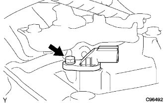
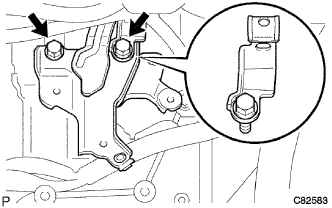

Transmission Revolution Sensor Mounting |
| 1. Transmission Revolution Sensor Mounting |
In the bolt, attach the Revoli Yushiyon Sensor to the Automati Tutlan Axle.
|  |
Attach the Revoli Syon Sensen Sensor.
| 2. Installation of air cleaner bracket |
|  |
Attach the air cleaner bracket with two bolts.
| 3. Air cleaner ASSY installation |
Attach the air cleaner case with three bolts.
Connect the No.1 air cleannine Retsu to the air cleaner case.
Attach the air cleaner fillyer.
Attach the air cleaner kyup and air cleaner hose No.1.
| 4. TASACN-ECU data monitor (sensor NT) |
reference)